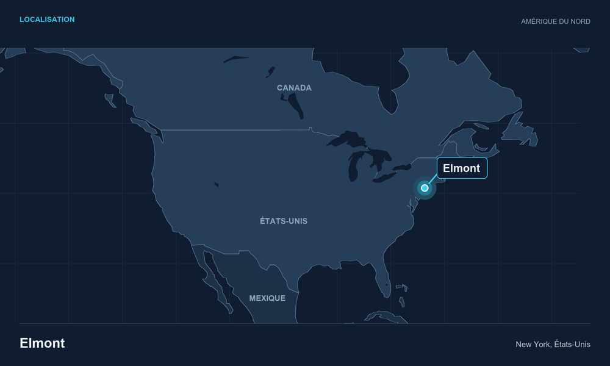

NYI
New York Islanders
Elmont, New York
Conférence Est - Division Metropolitan
Matchs joués
12
Victoires
8
Défaites
4
Points
16
Palmarès :
Stanley Cups: 4 (1979–80, 1980–81, 1981–82, 1982–83)
Conference Championships: 6 (1977–78, 1978–79, 1980–81, 1981–82, 1982–83, 1983–84)
Division Championships: 6 (1977–78, 1978–79, 1980–81, 1981–82, 1983–84, 1987–88)
Les couleurs de la franchise
L'effectif

53
Casey Cizikas
Attaquant
11
Anthony Duclair
Attaquant
38
Victor Eklund
Attaquant
51
Emil Heineman
Attaquant
92
Simon Holmstrom
Attaquant
14
Bo Horvat
Attaquant
63
Matias Maccelli
Attaquant
32
Kyle MacLean
Attaquant
44
Jean-Gabriel Pageau
Attaquant
81
Ondrej Palat
Attaquant
21
Kyle Palmieri
Attaquant
64
Calum Ritchie
Attaquant
10
Brayden Schenn
Attaquant
77
Tony DeAngelo
Défenseur
4
Matthew Kessel
Défenseur
24
Scott Mayfield
Défenseur
3
Adam Pelech
Défenseur
6
Ryan Pulock
Défenseur
28
Alexander Romanov
Défenseur
48
Matthew Schaefer
Défenseur
8
Logan Stanley
Défenseur
30
Ilya Sorokin
Gardien
40
Semyon Varlamov
Gardien
Season
Division
Record
Playoffs
2023-2024
Metropolitan 3rd
39-27-16
1st round
2024-2025
Metropolitan 6th
35-35-12
Not qualify
2025-2026
Metropolitan 6th
43-34-5
Not qualify
